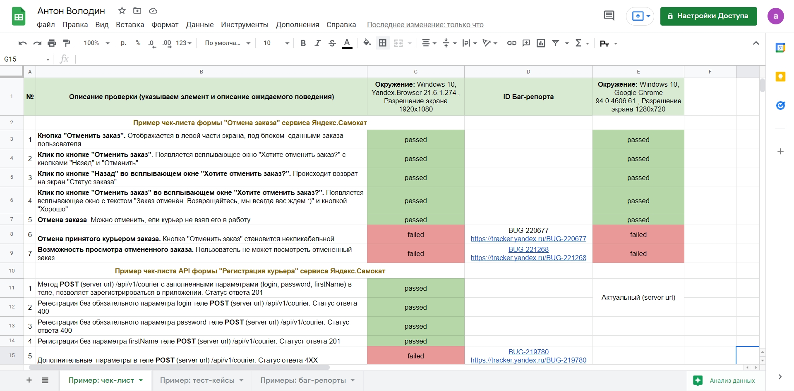

Тест-анализ / Тест-дизайн / DevTools / Charles / Postman / REST API / GUI / CLI / SQL
HARD SKILLS:
- Выполнял статический анализ требований на полноту, корректность, непротиворечивость и т.д
- Декомпозировал систему на объекты и элементы тестирования согласно спецификации
- Визуализировал требования по ассоциативным связям с помощью Mindmap
- Использовал Block-diagram для визуализации конкретных алгоритмов работы системы
- Применял техники тест-дизайна при проектировании тестовой документации
- Создавал чек-лист основной функциональности, для быстрых проверок в условиях дефицита времени
- Писал тест-кейсы с детальным описанием проверок, для удобства исполнения тестирования любым членом команды
- Заводил баг-репорты на основе найденных дефектов в сервисе управления проектами Яндекс.Трекер
- DevTools: использовал для тестирования верстки и изменения структуры через DOM
- Анализатор трафика Charles: использовал для подмены ответа от сервера
- Инструмен тестирования API Postman: использовал для отправки HTTP запросов и получения ответов от API приложения
- Использовал CLI для перемещения по файловой системе удаленного сервера
- Применял SQL для выборки нужных данных из реляционных баз
- Неплохо знаком c HTML, CSS, Bootstrap
- Тестировал мобильное приложение и снимал логи в среде разработки Android Studio, на реальном устройстве и с помощью консольной утилиты ADB
- Знаком с базовыми конструкциями на JS, могу точнее локализовать баг и собрать нужную информацию для разработчика
- Знаком с серверной NodeJS и библиотекой Puppeteer для запуска автотестов
Примеры тестовой документации в Google Docs
